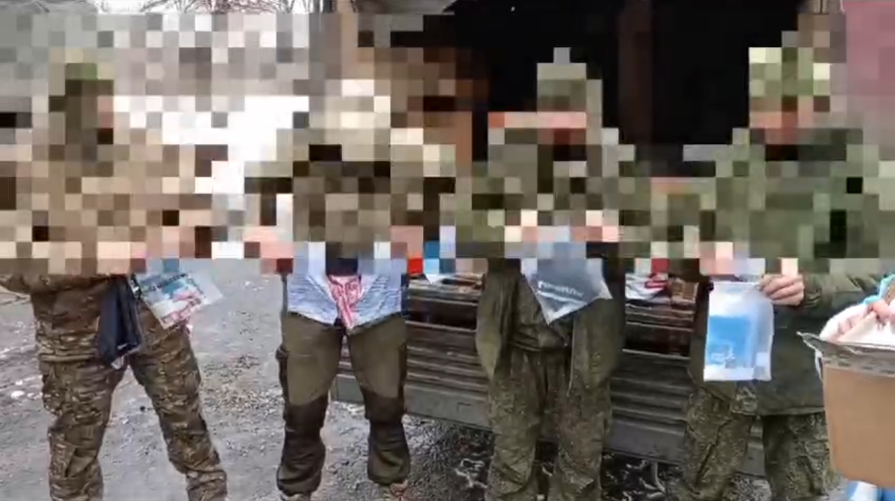
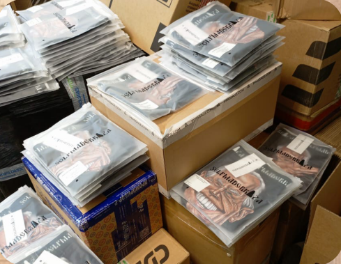

Манифест Бренда. Проект «Selfmadebraza»
Мы - команда нового российского бренда, и у нас есть Мечта!
В эпоху сомнительного процветания таких прискорбных явлений; как ложь, лицемерие, двойные стандарты и прочие нелицеприятные характерные проявления всех видов агрессий определённого слоя сообщества - Selfmadebraza, являет собой зарождение
культа, имеющего в своей основе исключительно почитание честности, открытости и подлинности в приверженности истинным семейным, традиционным и духовным ценностям.
Selfmadebraza - это символ смелости, решимости и уверенности, в самовыражении своей
идентичности. Наш брэнд - это больше, чем трикотажное изделие! Selfmadebraza - отождествляется изобретательностью, амбициями, профессионализмом и лояльностью к вечным
ценностям в Мире, где искренность часто уступает место удобной лжи.

Девизом нашей компании, является призыв к обществу:
«Не ограничивайся быть человеком - стань личностью»!
 В мире полуправд, ощущается острый дефицит людей, творящих добро; распространяющих любовь и заботу , о нашем «доме», коим мы считаем нашу планету, и
её жителей. Мы - командой друзей и единомышленников, уверовав в силу смелых идей
и истинных ценностей, вооружились миссией, выразить свою ноту протеста в адрес тех,
кто сеет смуту в нашем Мире, и плодит «тьму». Все мы помним, как в своей «прошлой»
жизни, мы являясь абсолютно чужими людьми, имели возможность , а зачастую даже
и потребность, обращаться друг к другу, со словами : «брат», «сестра», «отец», «мать», не испытывая при этом чувств
эмоционального отторжения. Сегодня же, нам пытаются навязать чужие стандарты, и это почти удаётся! Своей жизненной позицией, и форматом выбранных приоритетов, в рамках людских взаимоотношений мы уже давно перешли
рубеж, не менее прискорбного контекста, в виде потребительства друг друга. Но, то, куда нас толкают дальше - ещё
более страшно своей непредсказуемостью и самое главное, необратимостью! Мы уверены, что те, пока что «безголосые»
преемники нашего наследия, за которых мы взяли ответственность перед Всевышним, рожая их в этот мир, найдут понимание к нашему бездействию?... Настало время, сделать свой выбор не только в пользу создания, но и в первую очередь
- созидания! Мир жаждет оттепели сердец!
В мире полуправд, ощущается острый дефицит людей, творящих добро; распространяющих любовь и заботу , о нашем «доме», коим мы считаем нашу планету, и
её жителей. Мы - командой друзей и единомышленников, уверовав в силу смелых идей
и истинных ценностей, вооружились миссией, выразить свою ноту протеста в адрес тех,
кто сеет смуту в нашем Мире, и плодит «тьму». Все мы помним, как в своей «прошлой»
жизни, мы являясь абсолютно чужими людьми, имели возможность , а зачастую даже
и потребность, обращаться друг к другу, со словами : «брат», «сестра», «отец», «мать», не испытывая при этом чувств
эмоционального отторжения. Сегодня же, нам пытаются навязать чужие стандарты, и это почти удаётся! Своей жизненной позицией, и форматом выбранных приоритетов, в рамках людских взаимоотношений мы уже давно перешли
рубеж, не менее прискорбного контекста, в виде потребительства друг друга. Но, то, куда нас толкают дальше - ещё
более страшно своей непредсказуемостью и самое главное, необратимостью! Мы уверены, что те, пока что «безголосые»
преемники нашего наследия, за которых мы взяли ответственность перед Всевышним, рожая их в этот мир, найдут понимание к нашему бездействию?... Настало время, сделать свой выбор не только в пользу создания, но и в первую очередь
- созидания! Мир жаждет оттепели сердец!

Под эгидой нашей компании, мы запускаем по всему миру акцию протеста в рамках проекта «Selfmadebraza». Мы
выходим в свет первичной линейкой своего продукта, в виде мерча нашей кампании - серия коллекционных изделий,
под названием «Мудатино», с многочисленным разнообразием принтов, которые станут участниками анимационного
сериала. Наш продукт, говорит на 100% русском языке. Слоган нашей компании, обращен к «героям» принтов, изображённых на нашем изделии и гласит: «ХРЕН ВАМ К НОСУ, МИСТЕР ПРЕZЕЛЕНТ!». Поддерживая наш проект, вы
осуществляете существенный вклад, в развитие будущего не только нашей страны, но и
всего Мира в целом, демонстрируя свою приверженность истинным ценностям. Часть
средств от продажи наших товаров, мы отправляем на благотворительность, выражая
осознанность своей ответственности перед обществом. Ряды нашего сообщества неустанно растут и пополняются друзьями и единомышленниками, что свидетельствует о
том, что курс на мир и сохранения наследия, выбранный нашей компанией - единственно
верный! Selfmadebraza - это больше, чем продукт. Это наша идентичность, наша гордость, наше будущее!
В рамках акции, проводимой нашей компанией, мы предлагаем нашему клиенту, приобрести товар российского-
производителя, по ультимативной цене в размере 1961 руб. и 2139 руб. (в соответствии от модели), для этого используйте промокод «ПОБЕДА».
Предложение ограничено.
https://www.selfmadebraza.ru/
производителя, по ультимативной цене в размере 1961 руб. и 2139 руб. (в соответствии от модели), для этого используйте промокод «ПОБЕДА».
Предложение ограничено.